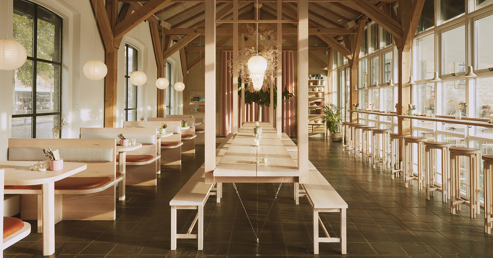
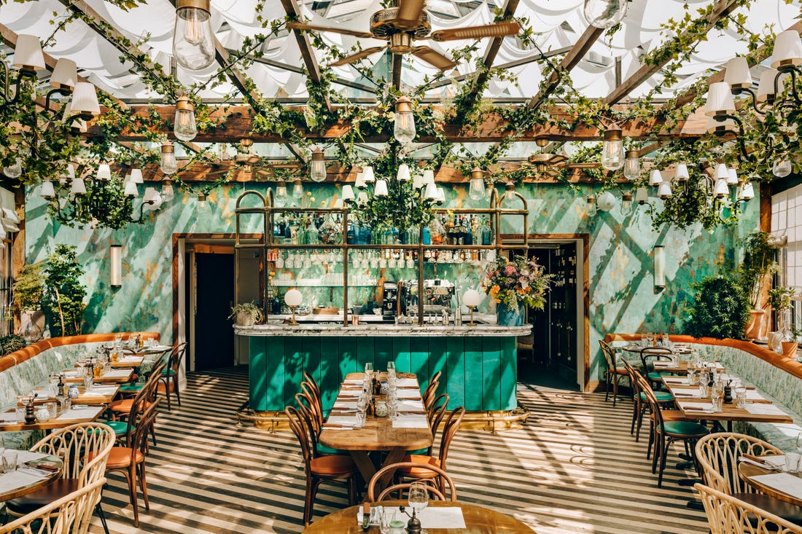

Restaurants
Rooney's Oceanfront Restaurant

Salty, ocean breezes, the wind is most definitely in your hair at this rustic, seaside dining experience ~~
HVERDAGEN Restaurant
Elegant long tables and grand pillars? Count me in for this modern take on Japenese cuisine and culture!
Pink Mamma in Paris, France
Not only is this place the perfect combination of comfort and elegance, but the decorations aren't the only organic things growing in this Parisian Palace ~~